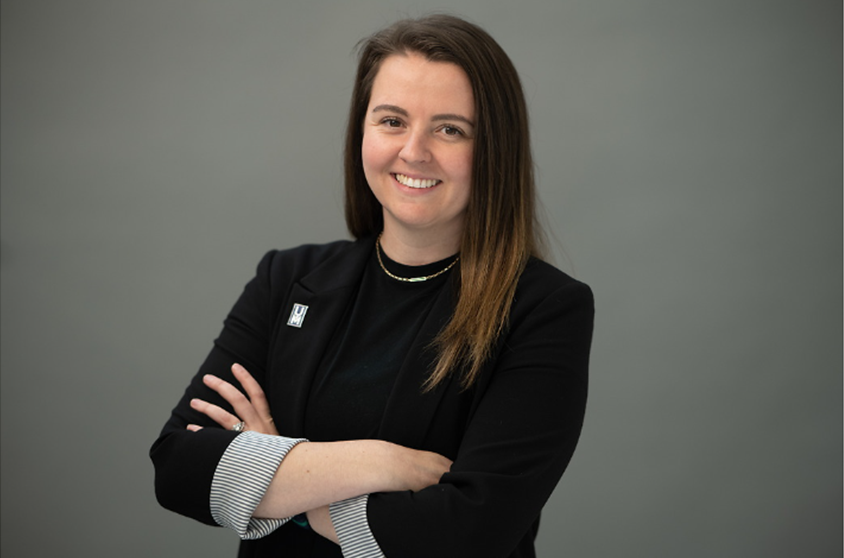
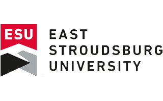
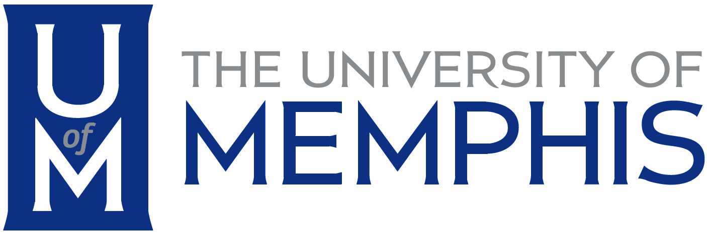
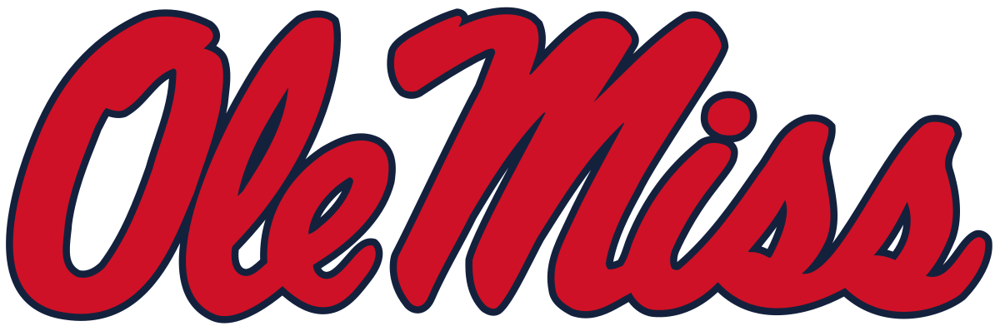
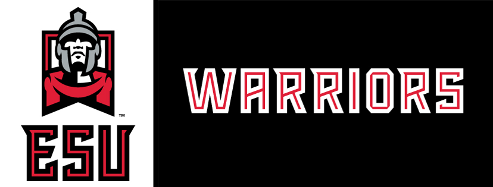

Sophie Coy Peranich
LinkedIn Profile
UI/UX Portfolio

Summary
I will write something here eventually...
Education
East Stroudsburg University
Master of Science, Management & Leadership
Graduated: August 2017
East Stroudsburg University,
Bachelor of Science, Sport Management
Graduated: May 2016

Project Experience
Vertige, UI/UX Designer
Expected completion: July 2023
- Complete redesign of Vertige iOS application in Figma.
- Enhanced the application by utilizing fundamentals of UI & UX design.
- Produced wireframes prior to Figma prototypes.
- Created working prototype for founder, users, and stakeholder’s review.
- Iterated designs based on feedback from users.
Relevant Technical Experience
Learn UI Design & Learn UX Design
Part-time student: August 2022-Present
- Develop knowledge and experience of UI/UX Design.
- Effectively utilize Figma as design application.
- UI Topics covered are:
- Fundamentals of UI Design
- Color
- Typography
- UI components
- Digital Platforms & Paradigms
- Responsive design.
- UX Topics covered are as follows:
- Fundamentals of Interaction Design
- Design patterns & Best Practices
- Research & testing
- Communicating Design.
Work Experience
Academic Success Advisor, College of Communication & Fine Arts
University of Memphis, Memphis, TN.
Sept. 2022-Present
- Provides academic coaching and advocacy sessions that monitor progress for students on academic warning,
academic
probation, or returning from academic suspension.
- Assists with the development, implementation, and assessment of programs and services for new or returning
students.
- Assists with the development, implementation, and assessment of the early intervention system, including
training and
support to faculty, staff, and administrators.
- Develops, coordinates, and presents workshops, presentations, and panels on academic success, personal growth,
and
development.
- Works collaboratively with faculty, staff, and administrators on individual student issues as well as overall
student
retention and graduation.
- Represents the unit on campus or community-wide committees and task forces focusing on student success,
retention, and
persistence.
- Research best practices in the field, including student retention; academic probation, suspension, and
reinstatement
programs and services; early intervention strategies; and academic coaching.
Academic Counselor, Department of Intercollegiate Athletics
University of Mississippi, Oxford, MS.
Jun. 2018-Aug. 2022
- Oversee and manage all academic development for 50 to 60 student athletes participating on men’s tennis, women’s
softball, and women's volleyball teams.
- Directly influence growth of current student-athletes by developing detailed graduation plans, academic
plans, and
cultivating strong relationships.
- Track, monitor, and update NCAA eligibility requirements, Graduation Success Rates, and Academic Progress
Reports
prior to each semester.
- Assist with NCAA eligibility certification process at the end of each semester by creating, updating, and
maintaining
eligibility documents for all supervised students.
- Develop LGBTQ+ initiatives and serving on Ole Miss Athletics Diversity, Equity, and Inclusion committee to
discuss and
implement DEI programs for students and staff.
- Document and maintain up-to-date academic files of advisees including, degree requirements, satisfactory
progress
forms, advising forms, grade reports, and eligibility certification forms.
- Assist in the recruitment of prospective student-athletes including creating, updating, and executing
presentations
that overview academic services and university programs.
- Plan, update, and maintain all digital signage throughout the FedEx Student- Athlete Success Center.
- Oversee student-athlete of the month nominations, including curating posters and disseminating throughout
department.
- Update any changes in the policies and procedures manual for staff and student- athlete handbook for
student-athletes.
- Support incoming freshmen and transfer student onboarding, registration, advising, and other administrative
needs in
collaboration with the Compliance Registrar, Business, Admissions, and Financial Aid offices.
- Teach freshman level introductory class to help first-year students adjust to the university, develop a
better
understanding of the learning process, and begin the major/career exploration process.
Academic Advising Intern, Department of Intercollegiate Athletics
University of Mississippi, Oxford, MS.
Feb. 2017-Jun. 2018
- Provided advising support to softball student-athletes, including creating graduation plans and developing
balanced class schedules based on in-season or out-of-season participation.
- Updated and maintained records for student-athletes and teams, including grades, GPA, Progress Towards Degree
requirements, and Academic Progress Rate.
- Conducted weekly meetings with assigned students to monitor their progress, and develop their time management,
test preparation, and study skills, particularly for incoming freshmen and "at-risk" returning student-athletes.
- Strengthened the class monitoring program by managing a team of 20 student workers, recording and reporting
absences and tardiness to academic counselors, and documenting all details for the end-of-semester report.
Graduate Assistant, Department of Intercollegiate Athletics
East Stroudsburg University, East Stroudsburg, PA.
Aug. 2016-Jan. 2017
- A Contributed to the day-to-day operations of an NCAA DII athletics department, including scheduling facilities
for
practice and events for all 18 teams, as well as some on-campus constituents.
- Managed and executed scheduled events independently, oversaw the operation of technical equipment, and
handled
financial reports, including the documentation and allocation of funds both before and after the events.
- Collaborated with the Pennsylvania State Athletic Conference (PSAC) and NCAA in hosting PSAC Conference
Championships
and NCAA Tournament Field Hockey games while ensuring compliance with all relevant PSAC/NCAA rules.
- Maintained an Excel spreadsheet of Grant-in-Aids for all PSAC institutions and compared ESU's sport teams
against the overall rankings.
  
Certifications
Mental Health First Aid,
National Council for Mental Wellbeing
Expires: February 2026
Introduction to Coding,
SheCodes
Awarded: February 2022
Skills & Programs
- Figma
- Prezi
- Canva
- Adobe Creative Cloud
- DegreeWorks
- Navigate EAB
- SAP
- Banner
- Microsoft Office
- EngagePHD
Leadership Roles
ESU SMGT Alumni Board Member
East Stroudsburg University
Aug. 2021-Present
Ole Miss Athletics DEI Committee Board Member
University of Mississippi
Jan. 2020-Aug. 2022
Rebels International Advisor,
University of Mississippi
Aug. 2019-Aug. 2022
Rebels Queer & Allies Advisor,
University of Mississippi
Aug. 2019-Aug. 2022